Adding a session-less submission to the title listing
For event organisersNot an organiser?
Learn how to add submission titles into a session without having them included in the program builder, by following the guidance below.#
Watch our instruction video
From your dashboard, go to the left-hand column and click on Abstract Management → Decisions → Table
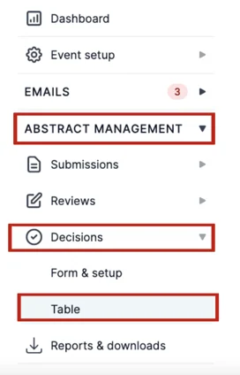
Once on the Decision dashboard, scroll to the right until you see the column In Titles Page.
If you do not see this on your dashboard, then click on the Column button found on the right-hand side of the page above the dashboard table.
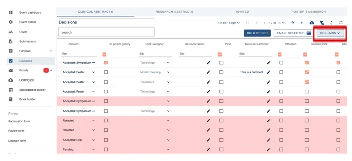
Click the Decision Responses tab and select the box next to In Titles Page.
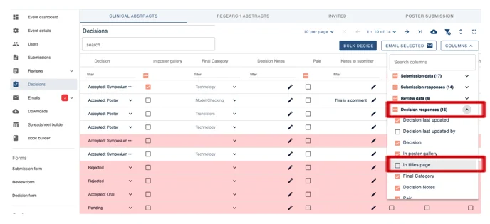
The In Titles Page column will now appear on your dashboard.
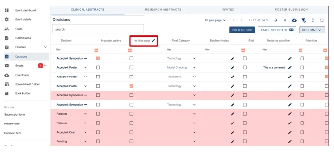
Please note the label “In Titles” can be changed.
Just click the pencil next to In Title to change its name.
Now tick the box found under the In Titles Page column to filter out what you are looking for.
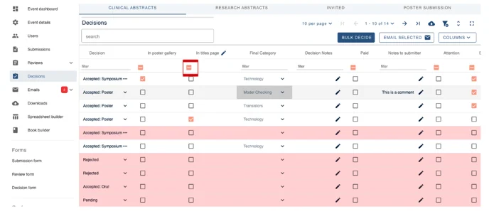
Those submissions that are now filtered (highlighted) under this column, will now appear on the Title Page - even if they are not in a program session.
How to see what the In Titles listings will look like on the Program Schedule
From your dashboard go to the Decisions tab on the left-hand column.
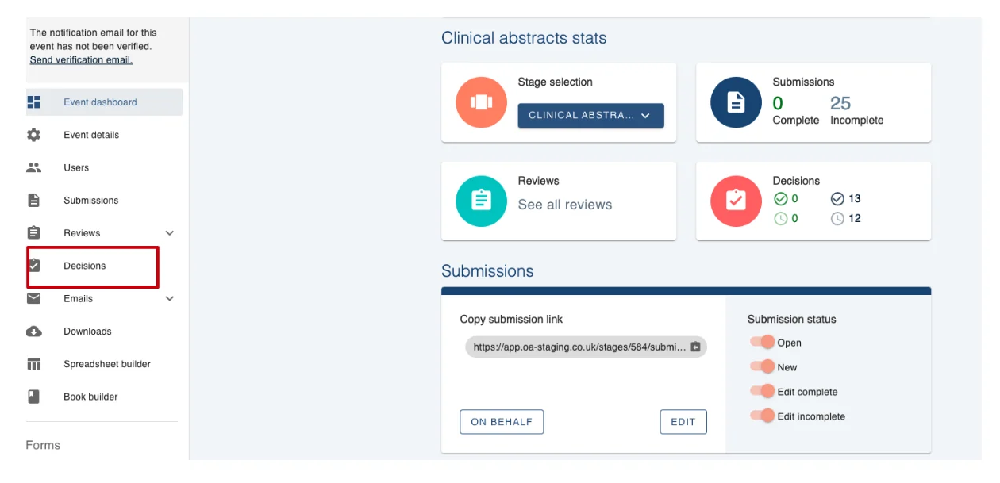
Tick the box to select all title submissions.
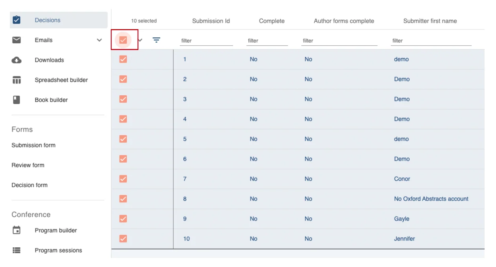
Next, scroll down on the left-hand column and click on Program Builder.
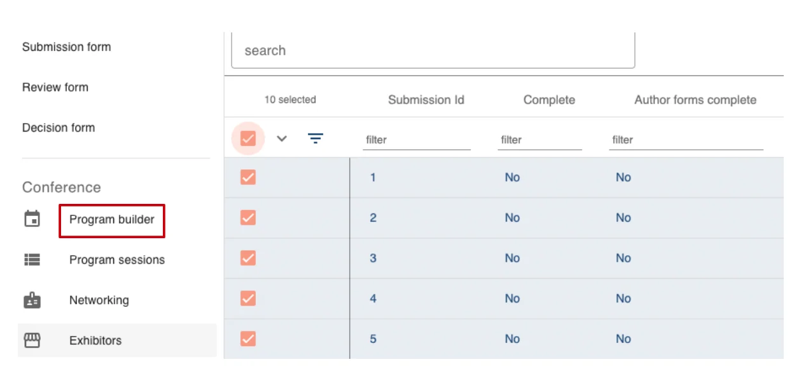
Select the arrow next to Published and click Preview.
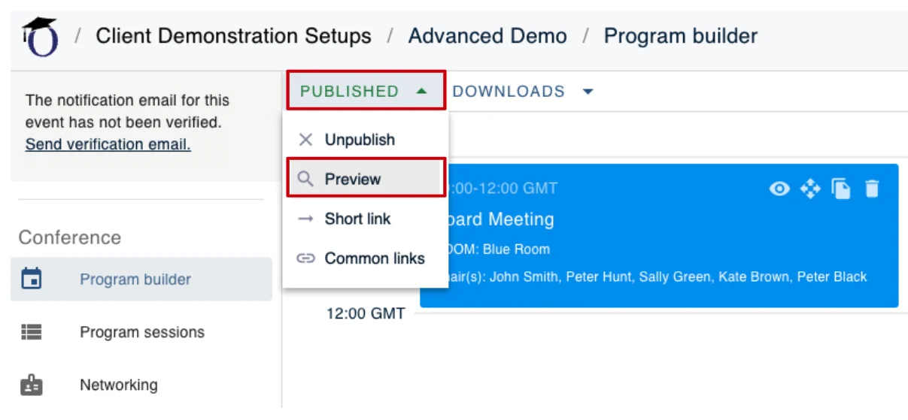
On this page click on the Titles tab in the left-hand column.
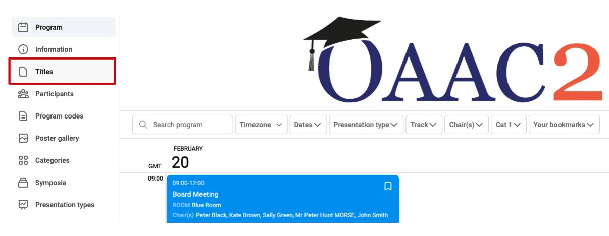
Here you will see all theIn Titles submissions.
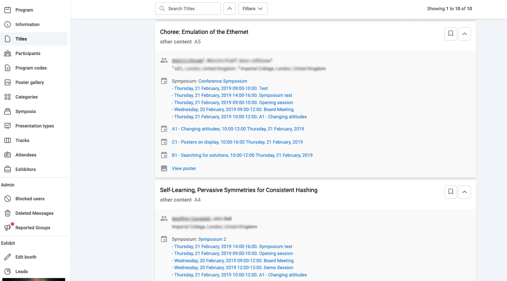
You can then filter these further by only showing abstracts in this poster session.
To do this select the Filter tab at the top of the page and select In Poster Gallery.
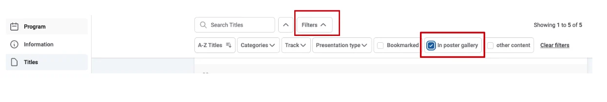
How to upload In Titles in Bulk
From your decision screen tick the box to select all title submissions.
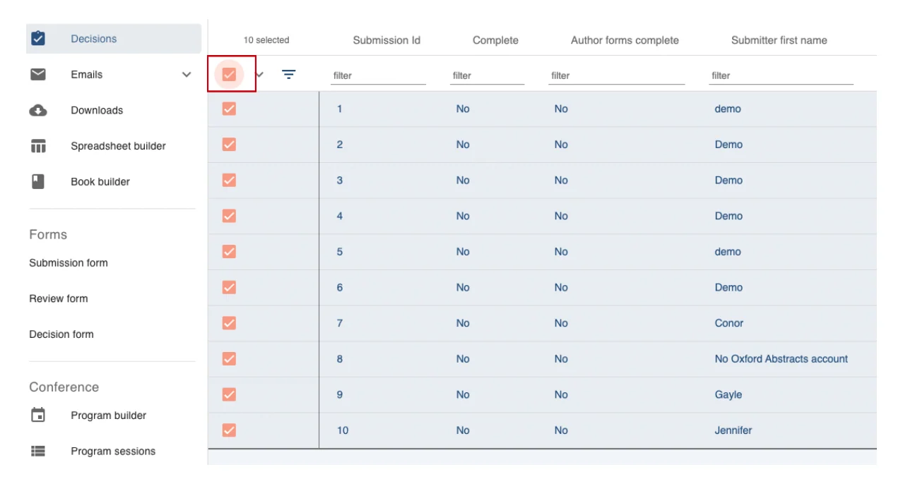
Now click BULK DECIDE towards the top right of the screen.
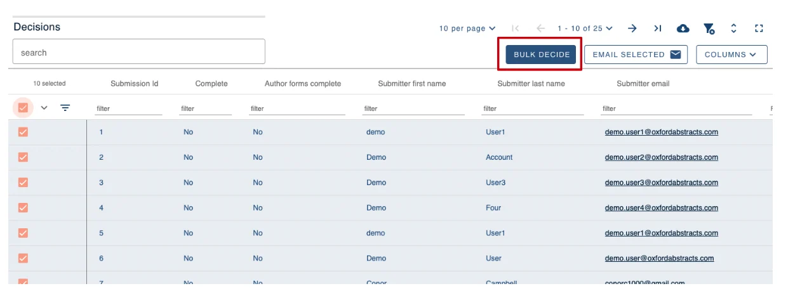
On the next screen, you’ll see all submission ID’s you selected in the left hand box and now you can select Add To Titles Listing Button.
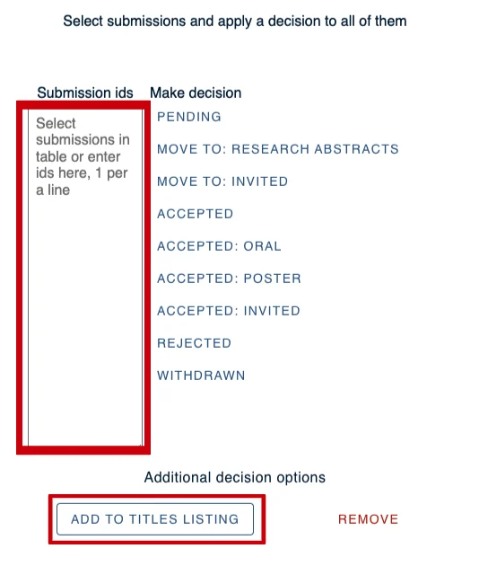
If you require further assistance please get in touch with our help desk via our Contact Form.
Didn't solve it? Ask our support team
No question is too small, and there's no charge for asking. Raise a ticket and someone who knows the software will pick it up.
Did this page solve it?
Thanks — this helps us fix it.